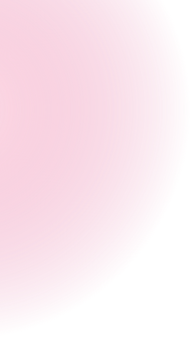
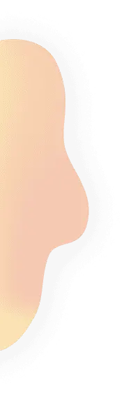
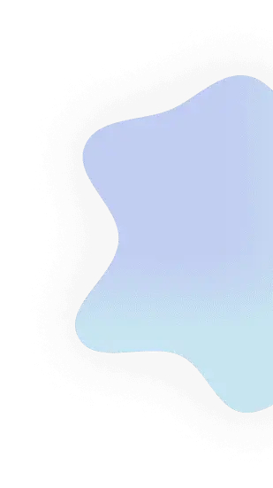
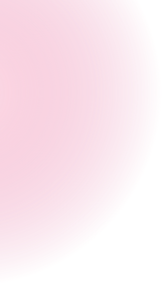
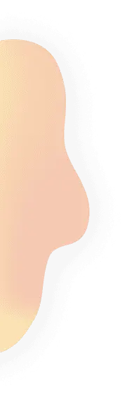
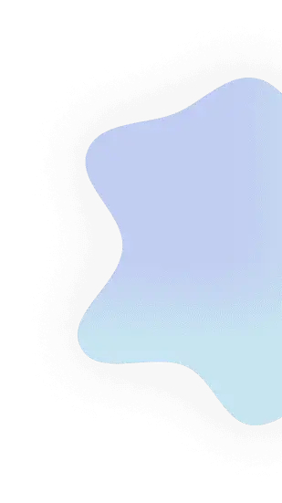
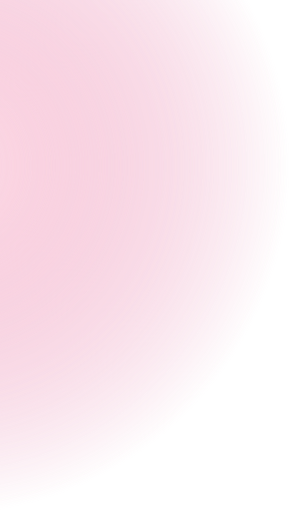
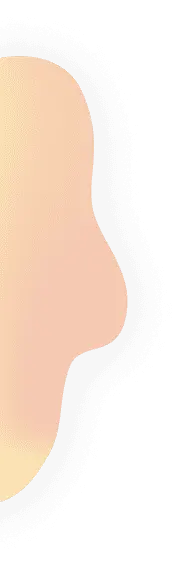
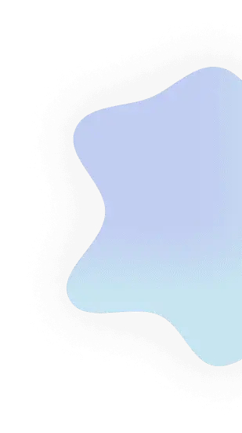

О премии
Голосовать
Номинации
Контакты
Результаты 2021
Vegan russian
awards 2021
voting

Спасибо за ваши голоса!
Результаты премии VEGAN RUSSIAN AWARDS 2021
будут опубликованы здесь и на официальном Instagram проекта vegan.russian 27 декабря после завершения голосования
Все номинации
Лучшее веганское молоко
Лучшее бариста молоко
Лучший веганский кисломолочный продукт
Лучший веганский сыр
Лучшее веганское мороженое
Лучшие веганские сырки
Лучший веганский майонез
Лучший крем-чиз
Лучший продукт для замены мяса
Лучший продукт для замены курицы
Лучший продукт для замены рыбы
Лучший продукт для замены яиц
Лучшие веганские пельмени
Лучшие веганские сосиски
Лучшая веганская колбаса
Лучший веганский паштет
Лучший тофу
 
